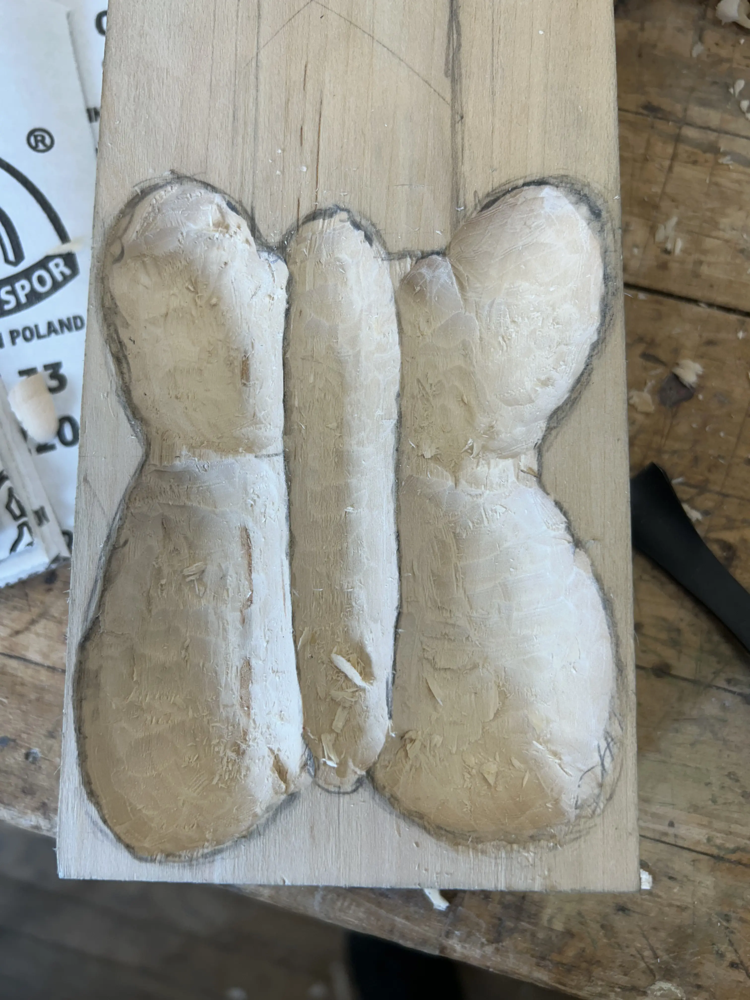
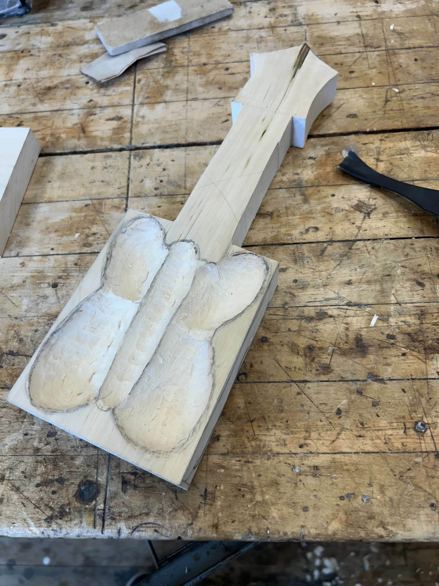

Project Description
Course:
Wood Furniture I
Objective:
Carve a decorative spoon from bass wood
Techniques Used:
Carving, Filing, Finishing, Jointing, Painting, Planing, Sanding, Sawing, Shaving
In Progress
Photos



3 of 3